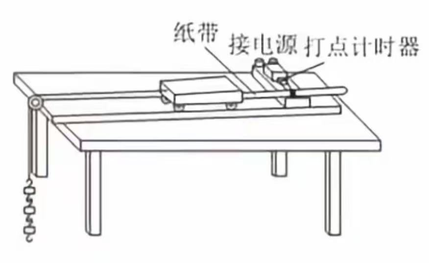
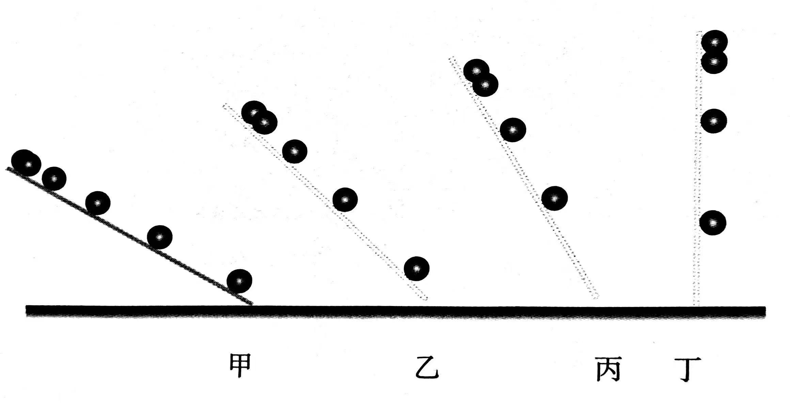
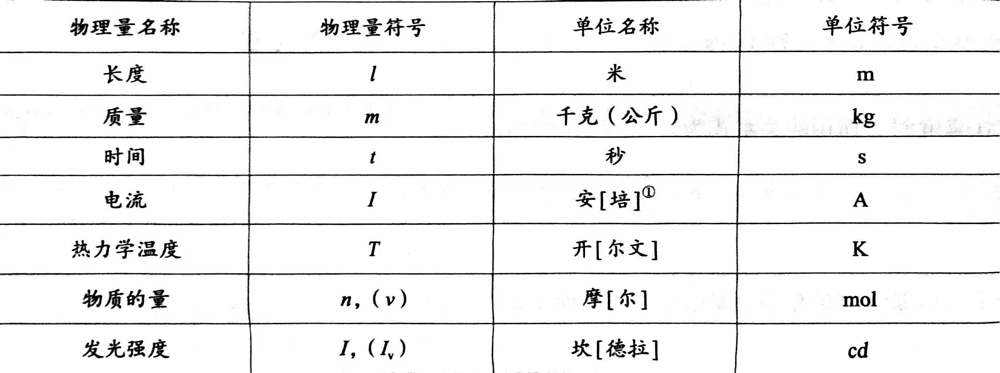

运动的描述
质点-参考系
机械运动 物体的空间位置随时间的变化
力学 研究物体做机械运动规律的分支
质点 某些情况下,可以忽略物体的大小和形状,把它简化为一个具有质量的点
质点性质 有质量但没有大小,是一种理想化的物理模型
可视为质点的情况
(1)物体的大小和形状与物体运动的空间相比做不足道,对研究问题的精度影响很小
(2)各点运动的差异不小,但是所研究的问题并不关注物体的细节变化,而是考虑物体整体的变化
(3)不能忽略物体的大小和形状,但物体上各点运动情况完全相同,物体上任意一点的运动可以代表整个物体的运动
理想化模型 为研究问题的方便而突出主要因素,忽略次要因素的一种科学抽象,实际并不存在
参考系 用来作参考的物体
特性 相对性,任意性,同一性,差异性
描述运动必须选定参考系,一般常取地面或相对地面静止的物体为参考系
时间-位移
时刻 某一瞬时,是时间轴上的一点
时间 两时刻的间隔,是时间轴上的一段线段
位置 质点相对于参考点(一般是坐标原点)的距离与方位,在坐标系中是一个点
位移矢量 描述质点位置变化的物理量,用初位置指向末位置的有向线段表示
路程标量 质点运动轨迹的长度
x-t图像 物体在每一时刻的位置或每一时间间隔的位移可以用图像直观地表示
速度
速度矢量 位移与发生这段位移所用时间之比表示物体运动的快慢
表达式 v=▲x/▲t
单位是米每秒,1m/s=3.6 km/h
速率标量
平均速度 物体的位移与发生这段位移所用时间之比,
描述物体位置变化的快慢
瞬时速度 物体在某一时刻或某一位置的速度,
描述物体在某一时刻或经过某一位置运动的快慢
v-t图像 物体运动的速度随时间变化的情况可以用图像来直观表示
加速度
描述物体运动速度变化的快慢
定义:速度的变化量与发生这一变化所用时间之比
单位是m/s^2
加速度的方向总是与速度变化量的方向相同,与速度方向无关。
匀速直线运动
实验：探究小车速度随时间变化的规律
电磁打点计时器 8v交流电 f=50hz 使用振针和复写纸
电火花打点计时器 220交流电 f=50hz 使用电火花和墨粉

纸带问题中间时刻的瞬时速度等于平均速度 v=(x1+x2)/2T或光电门v=d/▲t
逐差法 Xm-Xn=(m-n)a(T^2)
速度与时间
匀变速直线运动 沿一条直线加速度不变的运动
▲v=v-v0得v=v0+at
位移与时间
可以使用图像解决一些问题
微元法推出x=(v0+v)t*(1/2)得x=v0t+(1/2)a(t^2)
还可以得出v^2-v0^2=2ax
初速度为0时的推论：
一、每段时间相等
1.v1:v2:…:vn=1:2:…:n
2.x1:x2:…:xn=1^2:2^2:…:n^2
3.第一段时间内位移:…:第n段时间内位移=1:3:…:(2n-1)
二、每段位移相等
1.v1:v2:…:vn=1:根号2:…:根号n
2.t1:t2:…:tn=1:根号2:…:根号n
3.第一段位移的时间:…:第二段位移的时间=1:(根号2-1):…:(根号n-根号(n-1))
自由落体运动
只在重力作用下从静止开始下落的运动
自由落体加速度 一切物体自由落体下落的加速度都相同，
方向竖直向下，不同地方g不一样
v=gt x=(1/2)g(t^2)
伽利略的研究
技术受限，无法直接测定瞬时速度，通过数学运算得出
物体初速度为0，速度随时间变化是均匀的，v正比于t，
通过的位移与所用时间的二次方成正比，x正比于t^2
使用下图实验装置进行合理外推

相互作用——力
重力
由于地球吸引而使物体受到的力，单位牛顿，简称牛，符号N，G=mg,
1N/kg=1m/m^2做自由落体运动的物体只受重力作用
重心 各部分受到的重力作用集中于这点，可以看作重力的作用点
力的图示 有向线段表示力，箭头代表力的方向，长短表示力的大小
力的示意图 只需画出力的作用点与方向
弹力
形变 物体在力的作用下形状或体积发生改变，用放大法观察形变
弹力 发生形变的物体要恢复原状对与它接触的物体产生力的作用
弹性形变 物体发生形变撤去力能恢复原状
弹性限度 物体不能恢复原状的限度
胡克定律 F=kx k是弹簧的劲度系数，单位牛每米，符号N/m
摩擦力
滑动摩擦力 两个相互接触的物体相对滑动时
接触面上产生的相互阻碍的力，方向沿着接触面，与物体运动方向相反
Ff=uF压 u为动摩擦因数
静摩擦力 相互接触的两个物体之间只有相对运动的趋势而没有相对运动
这时的摩擦力叫静摩擦力，大小与推力相等
力的合成与分解
共点力 几个力都作用在物体的同一点或作用线相交于一点
合力 一个力单独作用的效果跟某几个力共同作用的效果相同
分力 几个力共同作用的效果跟某个力单独作用的效果相同
力的合成 求几个力的合力过程
力的分解 求一个力的分力过程
平行四边形定则 两力合成时，如果表示这两力的有向线段为
邻边平行四边形，这两个邻边之间的对角线就代表合力的大小和方向
两力大小不变，夹角减小，合力增大
矢量 既有大小又有方向，相加时遵从平行四边形定则的物理量
标量 只有大小没有方向，相加时遵从算术法则的物理量
共力点平衡
在共力点作用下物体平衡的条件是合力为0
三个力保持平衡，其中两个力的合力与第三个力大小相等方向相反
运动和力
牛顿定律
牛一（惯性定律） 一切物体总保持匀速直线运动状态或静止状态，
除非作用在它上面的力迫使它改变这种状态
惯性 物体保持原来匀速直线运动状态或静止状态的性质
牛二 物体加速度的大小跟它受到的作用力成正比，跟它的质量成反比，
加速度的方向跟作用力的方向相同，可表述为a正比于F/m或F=kma
牛三 两物体之间的作用力和反作用力总是大小相等方向相反，
作用在同一条直线上
实验：探究加速度与力、质量的关系
加速度与力 保持小车质量不变，改变码的个数改变小车所受的拉力,
小车所受的拉力可认为与槽码所受的重力相等。测得不同拉力下小车运动的加速度,
分析实加速度与拉力的变化情况，找出二者之间的定量关系
加速度与质量 保持小车所受的拉力不变，在小车上增加重物改变小车的质量,
测得不同质量的小车在这个拉力下运动的加速度，分析加速度与质量的变化情况，找出二者之间的定量关系
注：实验前平衡阻力，所拉重物质量应远小于小车质量，探究G与m关系化曲为直
平衡阻力过度会使m-F图像线左移，平衡阻力不足会使线右移，重物过重会使线后段弯曲
力学单位制
基本量 能够利用物理量之间的关系推导出其他物理量的单位的物理量
基本单位 基本量对应的单位
导出量 由基本量根据物理关系推导出来的其他物理量
导出单位 导出量的相应单位
基本单位和导出单位组成了单位制
国际单位制SI 国际通用，包括一切计量领域的单位制

超重与失重
失重 物体对支持物的压力（或对悬挂物的拉力）
小于物体所受重力的现象，加速下降或减速上升
超重 物体对支持物的压力（或对悬挂物的拉力）
大于物体所受重力的现象加速上升或减速下降
完全失重 加速度a=g